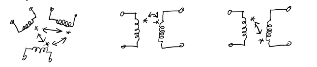

Ideal passive circuit elements
Resistor
Capacitor
Capacitor is an one-port element for which current through the element depends on velocity (derivate) of voltage along the element.Obs.: Capacitor is a symmetric element (it does not matter how it is connected in circuit).
where t0 is the initial time, u(t0) is the voltage at initial time (initial voltage or initial condition of the capacitor).
Obs.: Voltage along a capacitor has a continuous variation in time (at initial time, voltage is the same, u(t0)). But the current does not have a continuous variation in time (a jump of current at initial time).
Inductor
Inductor is an one-port element for which voltage along the element depends on velocity (derivate) of current through the element.Obs.: Inductor is a symmetric element (it does not matter how it is connected in circuit).
where t0 is the initial time, i(t0) is the current at initial time (initial current or initial condition of the inductor).
Obs.: Current through an inductor has a continuous variation in time (at initial time,current is the same, i(t0)). But the voltage does not have a continuous variation in time(a jump of voltage at initial time).
Coupled inductors (inductors with mutual coupling)
Coupled inductors represent a multi-ports element. So, two coupled inductors mean a two-ports elements.
There is a magnetic coupling between two inductors, so the inductors are not independently.
The voltage along one inductor depends on velocity (derivate) of current through the inductor and velocity (derivate) of current through the other inductor from the magnetic coupling.
Obs.: Magnetic coupling is represented by stars (polarized terminals).
Obs.: For both inductors, the voltage and current are oriented according to receiver convention.
L1=L11 is the self inductance of the first inductor
L2=L22 is the self inductance of the second inductor
M=L12=L21 is the mutual inductance of the two inductors
Obs.: L1>0, L2>0, M>0 or M<0.
Mutual inductance is positive if the currents through the two coupled inductors have the same orientation related to polarized terminals (both currents are going in polarized terminals or both currents are going out polarized terminals).
Mutual inductance is negative if the currents through the two coupled inductors have different orientation related to polarized terminals (one current is going in polarized terminal and the other current is going out polarized terminal).
Obs.: if M=0, there is no magnetic coupling between inductors, so the inductors are independently
Obs.: The electric transformer represents two inductors with magnetic coupling.
Ideal active circuit elements
Real branches
Real branches with magnetic coupling inductors